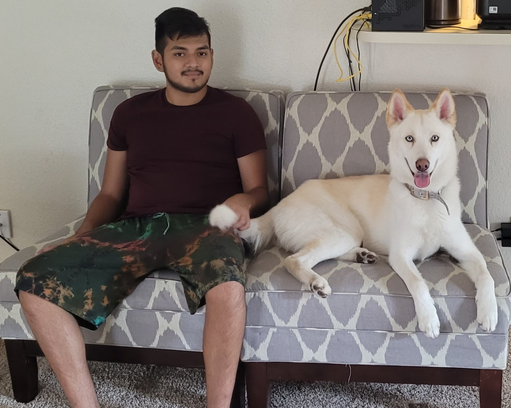

Howdy! I'm a Full-Stack Software Engineer with 2 years of experience mainly using PHP, React and Javascript.
My goal as a human is to make the world a better place using technology.
Within the next 10 years, I want to be working on AI in the medical sector.
The idea is to one day have a bot at every human's disposal that can help diagnose medical issues.
I already see 1000s of problems this could lead to, but it is something I want to exist.
I believe this could lead to better diagnosis by doctors, leading to faster treatment.
Sitting behind a computer screen all day is not good for us. So in my spare time I like to stay active and away from screens. I currently like hiking, axe throwing, and playing chess. I also have a husky named Ichi.
